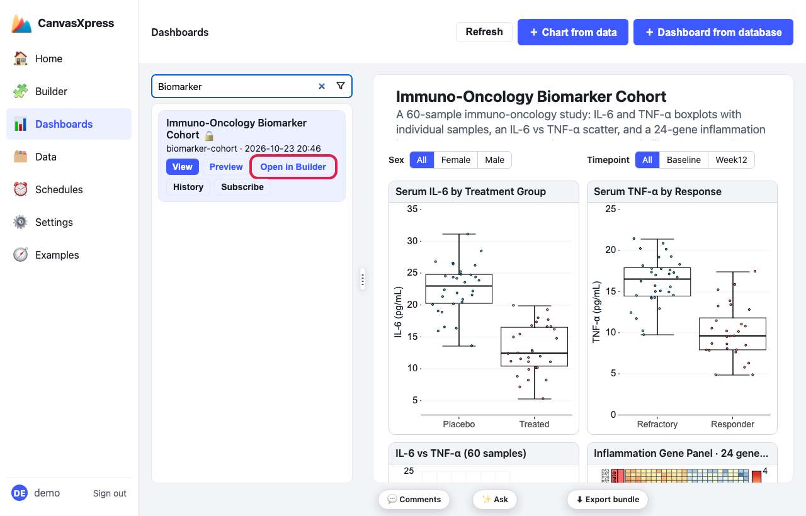
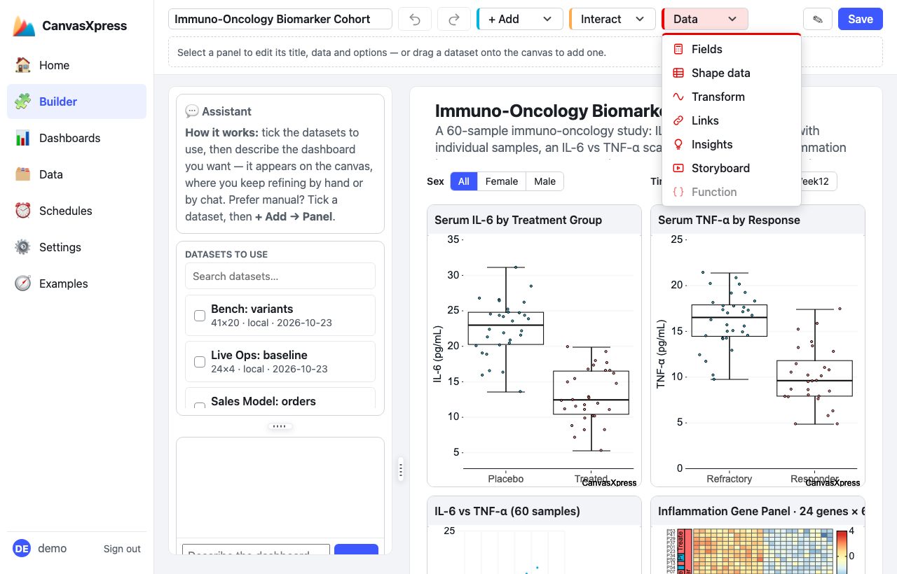
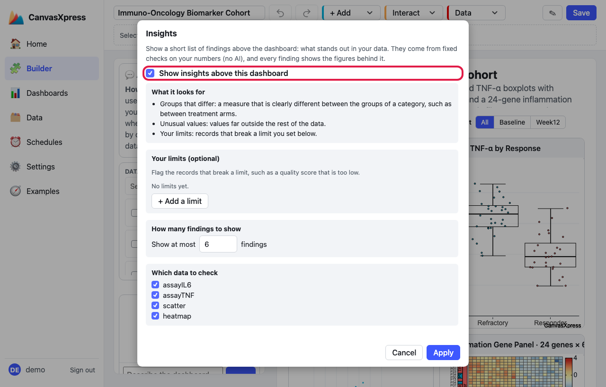
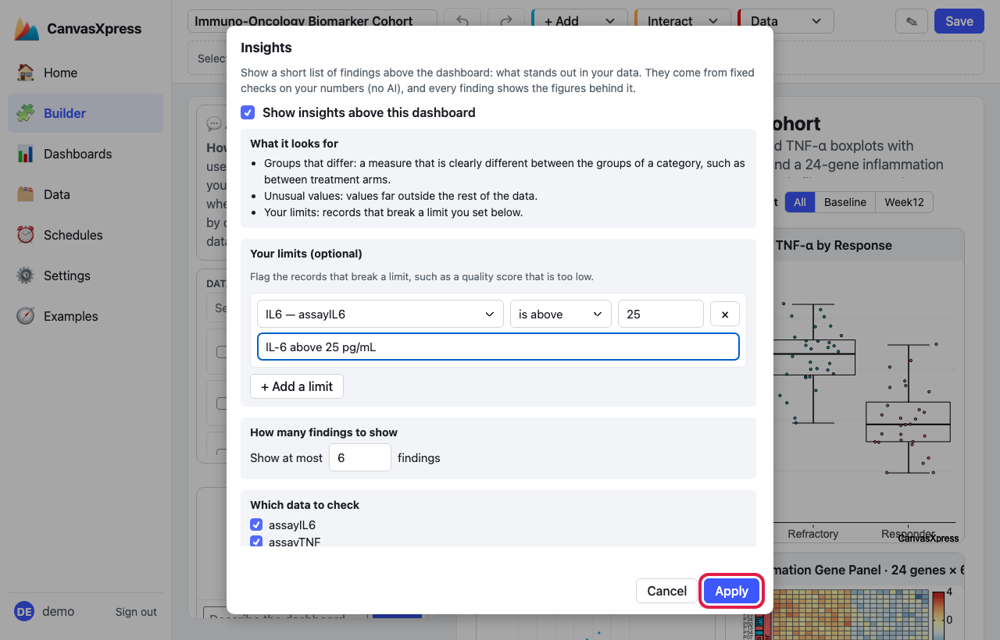
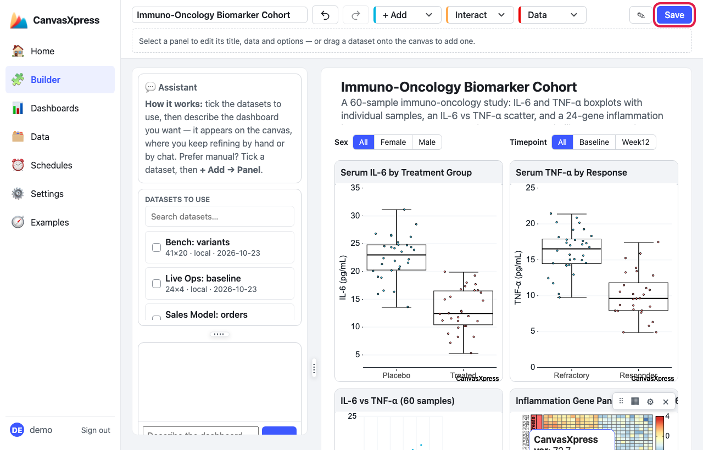
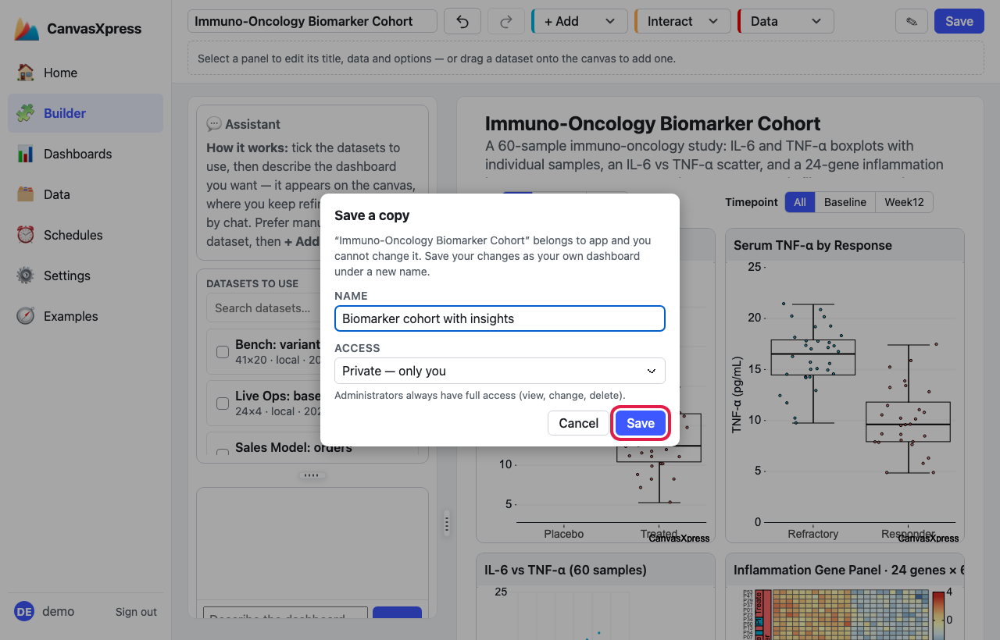
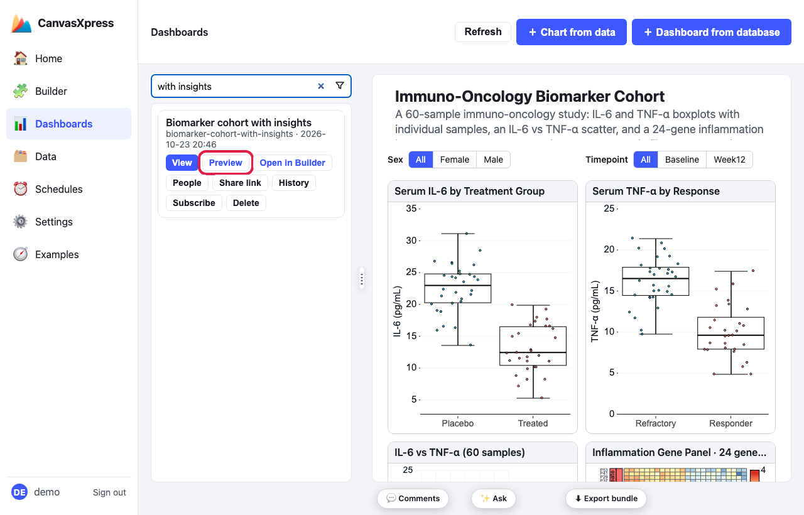
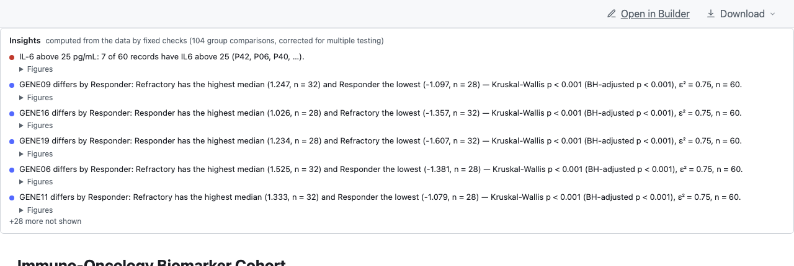
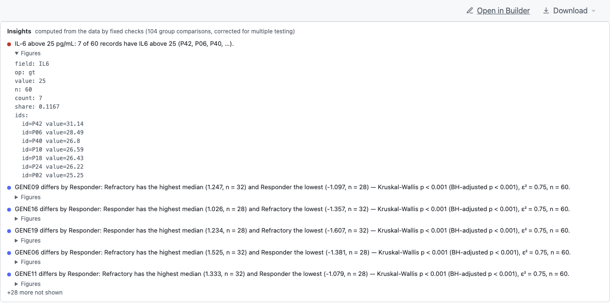

How to add insights to a dashboard
Insights are a short list of findings above a dashboard: a group that differs, values far from the rest, records that break a limit you set. Every finding comes from a fixed check on your numbers and shows the figures behind it. No AI is involved, nothing needs an account or credits, and the same data always gives the same insights. You switch them on from the Builder in a few clicks.
What it looks for
| Finding | What it means |
|---|---|
| Your limits | Records that break a limit you set, such as “IL-6 is above 25”. Nothing is flagged unless you write the limit down. |
| Groups that differ | A measure that is clearly different between the groups of a category, such as between treatment arms. The comparison allows for the many comparisons being made, so a chance difference is not flagged. |
| Unusual values | Values far outside the rest of the data. |
1Open the dashboard in the Builder
Go to Dashboards in the left menu, find your dashboard with the search box, and click Open in Builder.

Dashboards → search → Open in Builder (outlined).
2Open Data → Insights
In the Builder's toolbar open the Data menu and click Insights.

Data → Insights (outlined).
3Switch insights on
Tick Show insights above this dashboard. The rest of the window comes alive. With just this ticked, the dashboard looks for groups that differ and unusual values.

The switch (outlined). Below it: what it looks for, your limits, how many findings, and which data to check.
4Add a limit (optional)
Click + Add a limit and fill the row in plain words: pick the measure from your data, say whether it is below, is at most, is above or is at least a number, type the number, and name the limit if you like. Here: IL6 is above 25, named “IL-6 above 25 pg/mL”. Add as many limits as you need, and remove one with its ×.

One limit: IL6 is above 25. Click Apply (outlined).
- How many findings to show: the list shows the six most notable by default and says how many more were left out. Change the number if you want more or fewer.
- Which data to check: shown when the dashboard uses more than one data set. Untick the ones to leave out.
5Save the dashboard
Click Apply, then Save at the top right of the Builder. Applying changes the dashboard you are editing; saving is what stores it.

Save (outlined).
For a locked example the Builder asks you to Save a copy: give it a name and click Save.

Name the copy and click Save (outlined).
6Preview it
On the Dashboards page find your dashboard and click Preview. It opens full page in a new tab.

Preview (outlined) on the saved copy.
7Read the findings
The Insights list sits above the dashboard. Your limit comes first (the red dot), then groups that differ and unusual values, up to the number you chose; the list says how many more were left out.

Your limit first, then groups that differ. The header says how many comparisons were made.
Click Figures under any finding to see every number behind it: the counts, each group's size and median, and the adjusted p-value.

Figures for the limit: how many of how many records broke it, and each one's value.
Make the records clickable
When a dashboard has a case card (a one-row table that shows one patient or sample), the records a finding names appear as buttons, such as P014. Clicking one loads that record into the card and scrolls to it. The dashboards built from one table already have a case card (see How to build a dashboard from one table), and Cohort Tour shows it working. The Biomarker dashboard above has no case card, so its list shows no buttons.
Change or remove insights
Open Data → Insights again. Edit the limits, the number of findings or the data to check, then Apply and Save. To remove insights, untick Show insights above this dashboard, then Apply and Save. Cancel throws away your edits.
Where insights show, and who sees what
- They show on the Preview page and on shared links. They do not show in the Builder or in the View pane of the Dashboards page.
- The checks run on the server over the rows the viewer is allowed to see. Row- and column-level security applies as it does for the dashboard itself, so nobody sees a finding computed from data they cannot see.
- A measure with only two distinct values (a 0/1 event), a constant, or a category with more than six levels (an identifier, not a grouping) is not compared.
Tips
- Set limits for the things that matter to you (a failed quality score, a lab value out of range); the automatic checks find the surprises you did not think to look for.
- Every finding can be checked: Figures shows the numbers, and the statistics are tested against R in the server's test suite.
For developers: the same thing as JSON
The dialog writes an insights block into the dashboard's JSON, so you can also write it by hand. This is
the block the picture above produced:
"insights": {
"thresholds": [
{ "field": "IL6", "op": "gt", "value": 25, "label": "IL-6 above 25 pg/mL", "source": "assayIL6" }
]
}
| Key | Meaning |
|---|---|
thresholds[].field, op, value |
The failing condition. op is lt (is below), le (is at most), gt (is above) or ge (is at least). |
thresholds[].label | The name shown before the finding. |
thresholds[].source | Limit the check to one data source. |
sources | Which data sources to check (default: every source that is not a narrowed copy). |
max | The most findings to show (default 6). |
An empty "insights": {} turns on the automatic checks only. The full reference is
docs/insights.md in the repository.